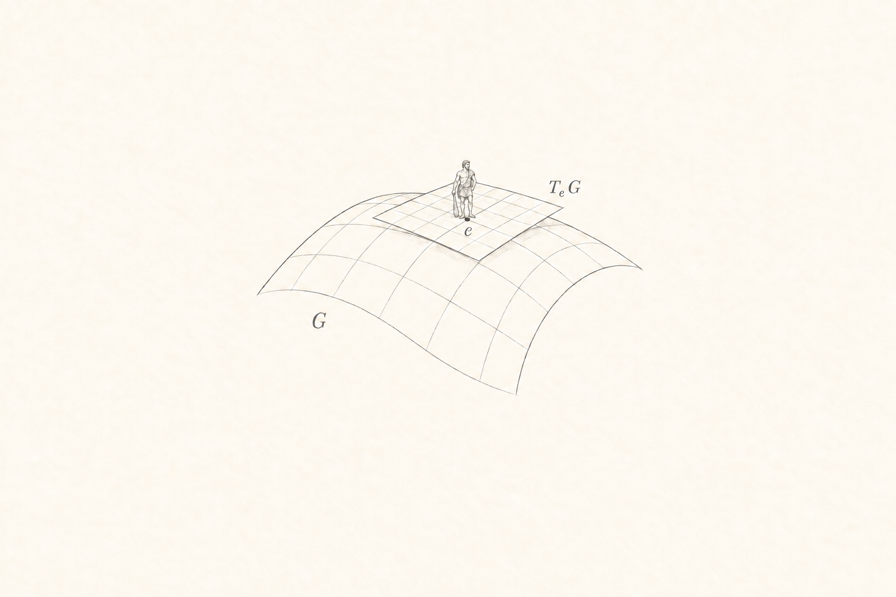

Christie Jacob Purackal
I work in perception and computer vision. I’m interested in the mathematical structures beneath it—geometry, algebra, and how we represent the world.
I explore these ideas from first principles, through code and small visual experiments.
